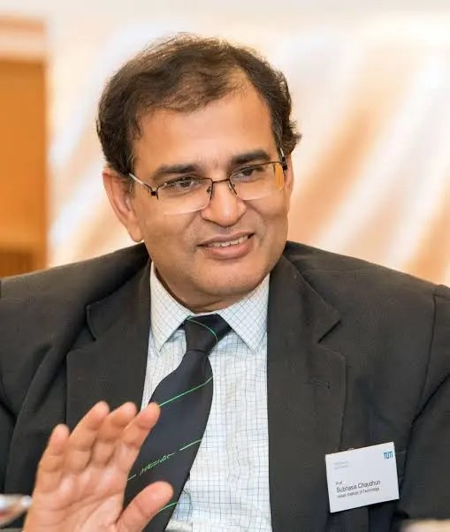

About the symposium
Ideas, conversations, and community at the frontiers of intelligent systems
PRISM 2028 brings together an invited group of researchers, practitioners, and thought leaders for focused technical talks and open discussions at the intersection of perception, recognition, imaging, signal processing, computer vision, and machine intelligence. The symposium will provide a forum to reflect on foundational advances, emerging research directions, and real-world challenges in visual computing and intelligent sensing. Through invited lectures, panel conversations, and informal technical exchanges, PRISM aims to encourage deep scientific dialogue, new collaborations, and a shared view of how these fields are shaping the future of technology.
In honor of Prof. Subhasis Chaudhuri
A tribute to a lasting scientific legacy
The symposium is being organized to mark the retirement of Prof Subhasis Chaudhuri from the Indian Institute of Technology Bombay and to celebrate his exceptional contributions to research, education, and academic leadership. Prof Chaudhuri's work spans multimedia, computer vision, image processing, pattern recognition, biomedical signal processing, and computational haptics; he has also been closely associated with IIT Bombay's Vision and Image Processing Lab. A former Director of IIT Bombay and a long-serving faculty member in the Department of Electrical Engineering, he has influenced generations of students and researchers through his scholarship, mentorship, and institution-building. PRISM 2028 is conceived as a tribute to his remarkable academic journey and his lasting impact on the image processing, vision, and machine intelligence communities.

Focus Areas
The symposium will feature invited discussions and talks across themes such as: